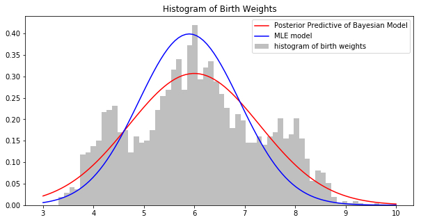
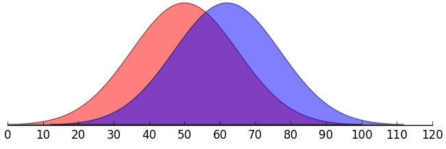
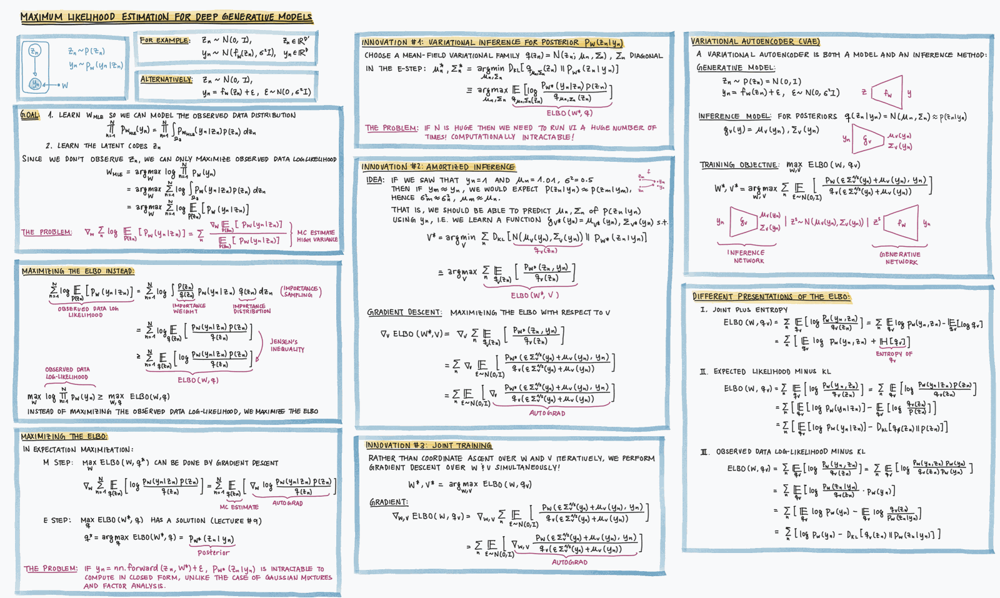
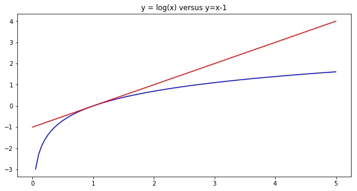
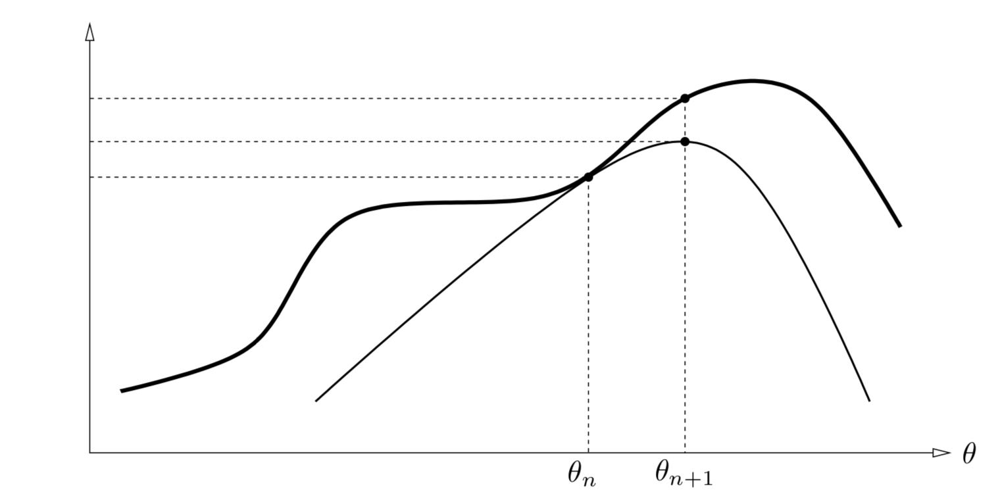
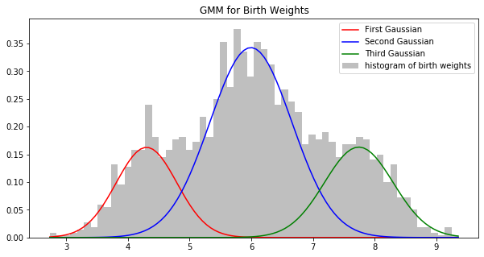
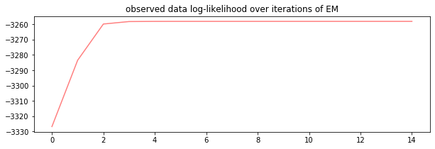

11. Latent Variable Models and MLE#
This chapter is adapted from AM207 (Harvard, Fall 2021). Watch the recorded lecture.
In this chapter
Motivation for Latent Variable Models
Common Latent Variable Models
Maximum Likelihood Estimation for Latent Variable Models: Expectation Maximization
Mixture of Gaussians
11.1. Motivation for Latent Variable Models#
A Model for Birth Weights#
Recall our model for birth weights, \(Y_1,\ldots, Y_N\). We posited that the birth weights are iid normally distributed with known \(\sigma^2\), \(Y_n \sim \mathcal{N}(\mu, 1)\).
Compare the maximum likelihood model and the Bayesian model for birth weight. Which model would you use to make clinical decisions? What’s hard about this comparison?


A Similarity Measure for Distributions: Kullback–Leibler Divergence#
Visually comparing models to the empirical distribution of the data is impractical. Fortunately, there are a large number of quantitative measures for comparing two distributions, these are called divergence measures. For example, the Kullback–Leibler (KL) Divergence is defined for two distributions \(p(\theta)\) and \(q(\theta)\) supported on \(\Theta\) as:
The KL-divergence \(D_{\text{KL}}[q \,\|\, p]\) is bounded below by 0, which happens if and only if \(q=p\). The KL-divergence also has information theoretic interpretations.
Note: The KL-divergence is defined in terms of the pdf’s of \(p\) and \(q\). If \(p\) is a distribution from which we only have samples and not the pdf (like the empirical distribution), we can nonetheless estimate \(D_{\text{KL}}[q \,\|\, p]\). Techniques that estimate the KL-divergence from samples are called non-parametric.
Going deeper: Why is the KL bounded below by 0?
First let’s see why the answer isn’t obvious. Recall that the KL divergence is the expected log ratio between two distribution:
Now, we know that when \(q\) is less than \(p\) (i.e. \(q/p < 1\)) then the log can be an arbitrarily negative number. So it’s not immediately obvious that the expected value of this fraction should always be non-negative!
An intuitive explanation:
Let the blue curve be q and the red be p. We have \(q < p\) from \((-\infty, 55)\), on this part of the domain \(\log(q/p)\) is negative. On \([55, \infty)\), \(\log(q/p)\) is nonnegative.
However, since we are sampling from \(q\), and \(q\)’s mass is largely over \([55, \infty)\), the log fraction \(\log(q/p\)) will tend to be nonnegative.


A formal argument:
There are many proofs of the non-negativity of the KL. Ranging from the very complex to the very simple. Here is one that just involves a bit of algebra:
We want to show that \(D_{\text{KL}}[q\|p] \geq 0\). Instead we’ll show, equivalently, that \(-D_{\text{KL}}[q\|p] \leq 0\) (we’re choosing show the statement about the negative KL, just so we can flip the fraction on the inside of the log and cancel terms):




Class Membership as a Latent Variable#
We observe that there are three clusters in the data. We posit that there are three classes of infants in the study: infants with low birth weights, infants with normal birth weights and those with high birth weights. The numbers of infants in the classes are not equal.
For each observation \(Y_n\), we model its class membership \(Z_n\) as a categorical variable,
where \(\pi_i\) in \(\pi = [\pi_1, \pi_2, \pi_3]\) is the class proportion. Note that we don’t have the class membership \(Z_n\) in the data! So \(Z_n\) is called a latent variable.
Depending on the class, the \(n\)-th birth weight \(Y_n\) will have a different normal distribution,
where \(\mu_{Z_n}\) is one of the three class means \([\mu_1, \mu_2, \mu_3]\) and \(\sigma^2_{Z_n}\) is one of the three class variances \([\sigma^2_1, \sigma^2_2, \sigma^2_3]\).
11.2. Common Latent Variable Models#
Latent Variable Models#
Models that include an observed variable \(Y\) and at least one unobserved variable \(Z\) are called latent variable models. In general, our model can allow \(Y\) and \(Z\) to interact in many different ways. In this chapter, we will study models with one type of interaction:

Going deeper: Gaussian Mixture Models (GMMs)
In a Gaussian Mixture Model (GMM), we posit that the observed data \(Y\) is generated by a mixture, \(\pi=[\pi_1, \ldots, \pi_K]\), of \(K\) number of Gaussians with means \(\mu = [\mu_1, \ldots, \mu_K]\) and covariances \(\Sigma = [\Sigma_1, \ldots, \Sigma_K]\). For each observation \(Y_n\) the class of the observation \(Z_n\) is a latent variable that indicates which of the \(K\) Gaussian is responsible for generating \(Y_n\):
where \(n=1, \ldots, N\) and \(\sum_{k=1}^K \pi_k = 1\).
GMMs are examples of model based clustering - breaking up a data set into natural clusters based on a statistical model fitted to the data.
Item-Response Models#
In item-response models, we measure an real-valued unobserved trait \(Z\) of a subject by performing a series of experiments with binary observable outcomes, \(Y\):
where \(n=1, \ldots, N\) and \(g\) is some fixed function of \(Z_n\).
Applications#
Item response models are used to model the way “underlying intelligence” \(Z\) relates to scores \(Y\) on IQ tests.
Item response models can also be used to model the way “suicidality” \(Z\) relates to answers on mental health surveys. Building a good model may help to infer when a patient is at psychiatric risk based on in-take surveys at points of care through out the health-care system.
Factor Analysis Models#
In factor analysis models, we posit that the observed data \(Y\) with many measurements is generated by a small set of unobserved factors \(Z\):
where \(n=1, \ldots, N\), \(Z_n\in \mathbb{R}^{D'}\) and \(Y_n\in \mathbb{R}^{D}\). We typically assume that \(D'\) is much smaller than \(D\).
Applications#
Factor analysis models are useful for biomedical data, where we typically measure a large number of characteristics of a patient (e.g. blood pressure, heart rate, etc), but these characteristics are all generated by a small list of health factors (e.g. diabetes, cancer, hypertension etc). Building a good model means we may be able to infer the list of health factors of a patient from their observed measurements.
11.3. Maximum Likelihood Estimation for Latent Variable Models: Expectation Maximization#
Going deeper: Expectation Maximization: Estimating the MLE for Latent Variable Models
Given a latent variable model \(p(Y, Z| \phi, \theta) = p(Y | Z, \phi) p(Z|\theta)\), we are interested computing the MLE of parameters \(\phi\) and \(\theta\):
where \(\Omega_Z\) is the domain of \(Z\). Why is this an hard optimization problem?
There are two major problems:
the product in the integrand
gradients cannot be past the integral (i.e. we cannot easily compute the gradient to solve the optimization problem).
We solve these two problems by:
pushing the log past the integral so that it can be applied to the integrand (Jensen’s Inequality)
introducing an auxiliary variables \(q(Z_n)\) to allow the gradient to be pushed past the integral.
We call \(\sum_{n=1}^N\mathbb{E}_{Z_n\sim q(Z)} \left[ \log\,\left(\frac{p(y_n, Z_n|\theta, \phi)}{q(Z)}\right)\right]\) the Evidence Lower Bound (ELBO). Note that maximizing the ELBO will yield a lower bound of the maximum value of the log likelihood. Although the optimal point of the ELBO may not be the optimal point of the log likelihood, we nonetheless prefer to optimize the ELBO because the gradients, with respect to \(\theta, \phi\), of the ELBO are easier to compute:
Note that we can push the gradient \(\nabla_{\theta, \phi}\) past the expectation \(\mathbb{E}_{Z_n\sim q(Z)}\) since the expectation is not computed with respect to our optimization variables!
Rather than optimizing the ELBO over all variables \(\theta, \phi, q\) (this would be hard), we optimize one set of variables at a time:
Step I: the M-step Optimize the ELBO with respect to \(\theta, \phi\):
Step II: the E-step Optimize the ELBO with respect to \(q\):
Rather than optimizing the ELBO with respect to \(q\), which seems hard, we will argue that optimizing the ELBO is equivalent to optimizing another function of \(q\), one whose optimum is easy for us to compute.
Note: We can recognize the difference between the log likelihood and the ELBO as a function we’ve seen:
Since \(\ell(\theta, \phi)\) is a constant, the difference \(\sum_{n=1}^N D_{\text{KL}} \left[ q(Z_n) \| p(Z_n| Y_n, \theta, \phi)\right] = \ell(\theta, \phi) - ELBO(\theta, \phi, q)\) decreases when \(ELBO(\theta, \phi, q)\) increases (and vice versa). Thus, maximizing the ELBO is equivalent to minimizing \(D_{\text{KL}} \left[ q(Z_n) \| p(Y_n| Z_n, \theta, \phi)\right]\):
Thus, we see that
That is, we should set the optimal distribution \(q\) to be the posterior \(p(Z_n| Y_n, \theta, \phi)\).
Iteration Of course, we know that optimizing a function with respect to each variable is not sufficient for finding the global optimum over all the variables, considered together! Thus, performing one E-step and one M-step is not enough to maximize the ELBO. We need to repeat the two steps over and over.
Going deeper: Question: Why don’t gradients commute with expectation?
We have the following property of expectations:
That is, when the gradient is with respect to a variable that does not appear in the distribution with respect to which you are taking the expectation, then you can push the gradient past the expectation.
The intuition: the gradient with respect to \(z\) is computing the changes in a function by making infinitesimally small changes to \(z\), the expectation is computing the average value of a function by sampling \(x\) from a distribution that does not depend on \(z\). Each operation is making an independent change to two different variables and hence can be done in any order.
Why can’t you do this in general? I.e. why is it that,
The intuition: the gradient with respect to z is computing the changes in a function by making infinitesimally small changes to z, which in turn affects the samples produced by p(x|z), these samples finally affect the output of f. This is a chain of effects and the order matters.
The formal proof: Consider the following case,
and
Then, we have
On the other hand, we have
Note that:
Going deeper: Question: Why do we need to maximize the ELBO with respect to q?
Recall that in the derivation of the ELBO, we first introduced an auxiliary variable q to rewrite the observed log-likelihood:
Again, the reason why we do this is because: when we eventually take the gradient wrt to \(\theta, \phi\) during optimization we can use the identity
At this point, there is no need to maximize over q, that is:
The \(q\) cancels and has no effect on the outcome or process of the optimization (but you can’t just choose any \(q\) you want - can you see what are the constraints on \(q\)?).
Now, the problem is that the log is on the outside of the expectation. This isn’t a problem in the sense that we don’t know how to take the derivative of a logarithm of a complex function (this is just the chain rule ), the problem is that
can be very complex (since p and q are pdf’s) and so over all the gradient of the log expectation is not something you can compute roots for. Here is where we push the log inside the expectation using Jensen’s inequality:
When we push the log inside the expectation, we obtain the Evidence Lower Bound (ELBO).
Now, for any choice of \(q\), we always have:
But the ELBO is not necessarily a tight bound (i.e. maximizing the ELBO can be very far from maximizing the log-likelihood!)! In particular, some choices of \(q\) might give you a tighter bound on the log-likelihood than others. Thus, we want to select the \(q\) that give us the tightest bound:
The Expectation Maximization Algorithm#
The expectation maximization (EM) algorithm maximize the ELBO of the model,
Initialization: Pick \(\theta_0\), \(\phi_0\).
Repeat \(i=1, \ldots, I\) times:
E-Step:
\[q_{\text{new}}(Z_n) = \underset{q}{\mathrm{argmax}}\; ELBO(\theta_{\text{old}}, \phi_{\text{old}}, q) = p(Z_n|Y_n, \theta_{\text{old}}, \phi_{\text{old}})\]M-Step:
\[\begin{split}\begin{aligned} \theta_{\text{new}}, \phi_{\text{new}} &= \underset{\theta, \phi}{\mathrm{argmax}}\; ELBO(\theta, \phi, q_{\text{new}})\\ &= \underset{\theta, \phi}{\mathrm{argmax}}\; \sum_{n=1}^N\mathbb{E}_{Z_n\sim p(Z_n|Y_n, \theta_{\text{old}}, \phi_{\text{old}})}\left[\log \left( p(y_n, Z_n | \phi, \theta\right) \right]. \end{aligned}\end{split}\]
Going deeper: The Auxiliary Function
We often denote the expectation in the M-step by \(Q\left(\theta, \phi| \theta^{\text{old}}, \phi^{\text{old}}\right)\)
and call \(Q\) the auxiliary function.
Frequently, the EM algorithm is equivalently presented as
E-step: compute the auxiliary function: \(Q\left(\theta, \phi| \theta^{\text{old}}, \phi^{\text{old}}\right)\)
M-step: maximize the auxiliary function: \(\theta^{\text{new}}, \phi^{\text{new}} = \underset{\theta, \phi}{\mathrm{argmax}}\,Q\left(\theta, \phi| \theta^{\text{old}}, \phi^{\text{old}}\right)\).
The log of the joint distribution \(\prod_{n=1}^N p(Z_n, Y_n, \theta, \phi)\) is called the complete data log-likelihood (since it is the likelihood of both observed and latent variables), whereas \(\log \prod_{n=1}^N p(Y_n| \theta, \phi)\) is called the observed data log-likelihood (since it is the likelihood of only the observed variable).
The auxiliary function presentation of EM is easy to interpret:
In the E-step, you fill in the latent variables in the complete data log-likelihood using “average” values, this leaves just an estimate of the observed log-likelihood.
In the M-step, you find parameters \(\phi\) and \(\theta\) that maximizes your estimate of the observed log-likelihood.
We chose to derive EM via the ELBO in this chapter because it makes an explicit connection between the EM algorithm for estimating MLE and variational inference method for approximating the posterior of Bayesian models. It is, however, worthwhile to derive EM using the auxiliary function \(Q\), as \(Q\) makes it convenient for us to prove properties of the EM algorithm.
Going deeper: Monotonicity and Convergence of EM
Before we run off estimating MLE parameters of latent variable models with EM, we need to sanity check two points:
(Monotonicity) we need to know that repeating the E, M-steps will never decrease the ELBO!
(Convergence) we need to know that at some point the EM algorithm will naturally terminate (the algorithm will cease to update the parameters).
We first prove the monotonicity of EM. Consider the difference between \(\ell(\theta, \phi) - \ell(\theta^{\text{old}}, \phi^{\text{old}})\), i.e. the amount by which the log-likelihood can increase or decrease by going from \(\theta^{\text{old}}, \phi^{\text{old}}\) to \(\theta, \phi\):
Thus, when we maximize the gain in log-likelihood going from \(\theta^{\text{old}}, \phi^{\text{old}}\) to \(\theta, \phi\), we get:
or equivalently,
Note that the above max is always greater than or equal to zero:
since we can always maintain the status quo by choosing \(theta = \theta^{\text{old}}\) \(\phi = \phi^{\text{old}}\):
Thus, we have that by maximizing \(Q\left(\theta, \phi| \theta^{\text{old}}, \phi^{\text{old}}\right)\), we ensure that \(\ell(\theta, \phi) - \ell(\theta^{\text{old}}, \phi^{\text{old}})\geq 0\) in each iteration of EM.
If the likelihood of the model is bounded above (i.e. \(\ell(\theta, \phi) \leq M\) for some constant \(M\)), then EM is guaranteed to convergence. This is because we’ve proved that EM increases (or maintains) log-likelihood in each iteration, therefore, if \(\ell(\theta, \phi)\) is bounded, the process must converge.
Disclaimer: Although EM converges for bounded likelihoods, it is not guaranteed to converge to the global max of the log-likelihood! Maximizing a lower bound of a function does not necessarily maximize the function itself! Often time, EM converges to local optima of the likelihood function and the point to which it converges may be very sensitive to initialization. We will study this kind of behaviour in more detail when we cover non-convex optimization in Chapter 16.


Going deeper: Example: EM for the Gaussian Mixture Model of Birth Weight
The Gaussian mixture model for the birth weight data has 3 Gaussians with means \(\mu = [\mu_1, \mu_2, \mu_3]\) and variances \(\sigma^2 = [\sigma_1^2, \sigma_2^2, \sigma_3^2]\), and the model is defined as:
where \(n=1, \ldots, N\) and \(\sum_{k=1}^3 \pi_k = 1\).
The E-Step The E-step in EM computes the distribution:
Since \(Z_n\) is a label, \(p(Z_n|Y_n, \ldots)\) is a categorical distribution, with the probability of \(Z_n=k\) given by:
where \(\mathcal{Z} = \sum_{k=1}^K \pi_{k, \text{old}}\,\mathcal{N}(y_n; \mu_{k, \text{old}}, \sigma^2_{k, \text{old}})\).
Going deeper: Example: EM for the Gaussian Mixture Model of Birth Weight
Setting Up the M-Step The M-step in EM maximize the following:
If we expand the expectation a little, we get:
We can maximize each Term #1 and Term #2 individually.
Example: EM for the Gaussian Mixture Model of Birth Weight#
Solving the M-Step#
We see that the optimization problem in the M-step: \(\mu_{\text{new}}, \sigma^2_{\text{new}}, \pi_{\text{new}} = \underset{\mu, \sigma^2, \pi}{\mathrm{argmax}}\; ELBO(\mu, \sigma^2, \pi, q_{\text{new}})\) is equivalent to two problems
We can solve each optimization problem analytically by finding stationary points of the gradient (or the Lagrangian):
\(\mu_{\text{new}} = \frac{1}{ \sum_{n=1}^N r_{n, k}} \sum_{n=1}^N r_{n, k} y_n\)
\(\sigma^2_{\text{new}} = \frac{1}{ \sum_{n=1}^N r_{n, k}} \sum_{n=1}^N r_{n, k} (y_n - \mu_{\text{new}})^2\)
\(\pi_{\text{new}} = \frac{\sum_{n=1}^N r_{n, k}}{N}\)
Example: EM for the Gaussian Mixture Model of Birth Weight#
All Together#
Initialization: Pick any \(\pi\), \(\mu\), \(\sigma^2\)
E-Step: Compute \(r_{n, k} = \displaystyle\frac{\pi_{k, \text{old}}\,\mathcal{N}(y_n; \mu_{k, \text{old}}, \sigma^2_{k, \text{old}})}{\mathcal{Z}}\), where \(\mathcal{Z} = \sum_{k=1}^K \pi_{k, \text{old}}\,\mathcal{N}(y_n; \mu_{k, \text{old}}, \sigma^2_{k, \text{old}})\).
M-Step: Compute model parameters:
\(\mu_{\text{new}} = \frac{1}{ \sum_{n=1}^N r_{n, k}} \sum_{n=1}^N r_{n, k} y_n\)
\(\sigma^2_{\text{new}} = \frac{1}{ \sum_{n=1}^N r_{n, k}} \sum_{n=1}^N r_{n, k} (y_n - \mu_{\text{new}})^2\)
\(\pi_{\text{new}} = \frac{\sum_{n=1}^N r_{n, k}}{N}\)
Implementing EM for the Gaussian Mixture Model of Birth Weight#
iteration 0
iteration 100
iteration 200
iteration 300
iteration 400
iteration 500
iteration 600
iteration 700
iteration 800
iteration 900
iteration 1000
iteration 1100
iteration 1200
iteration 1300
iteration 1400
fig, ax = plt.subplots(1, 1, figsize=(10, 5))
ax.hist(y, bins=60, density=True, color='gray', alpha=0.5, label='histogram of birth weights')
ax.plot(x, pi_current[0] * sp.stats.norm(mu_current[0], sigma_current[0]**0.5).pdf(x), color='red', label='First Gaussian')
ax.plot(x, pi_current[1] * sp.stats.norm(mu_current[1], sigma_current[1]**0.5).pdf(x), color='blue', label='Second Gaussian')
ax.plot(x, pi_current[2] * sp.stats.norm(mu_current[2], sigma_current[2]**0.5).pdf(x), color='green', label='Third Gaussian')
ax.set_title('GMM for Birth Weights')
ax.legend(loc='best')
plt.show()

Going deeper: Example: EM for Gaussian Mixture Models (Multivariate)
Recall that our Gaussian mixture model, of \(K\) number of Gaussians with means \(\mu = [\mu_1, \ldots, \mu_K]\) and covariances \(\Sigma = [\Sigma_1, \ldots, \Sigma_K]\), is defined as:
where \(n=1, \ldots, N\) and \(\sum_{k=1}^K \pi_k = 1\).
We derive the updates for \(\pi\), \(\mu\) and \(\Sigma\) for the EM algorithm E-step:
Since \(Z_n\) is a categorical variable, we compute the probability of \(Z_n = k\) separately:
where \(\mathcal{Z} = \sum_{k=1}^K \pi_{k, \text{old}}\,\mathcal{N}(y_n; \mu_{k, \text{old}}, \Sigma_{k, \text{old}})\).
Thus, \(q_{\text{new}}(Z_n)\) is a categorical distribution \(Cat([r_{n, 1}, \ldots, r_{n, K}])\).
M-Step:
where \(n=1, \ldots, N\) and \(\sum_{k=1}^K \pi_k = 1\).
We solve the two optimization problems separately. The optimization problem
can be solved using Lagrangian multipliers yielding the solution:
The optimization problem
can be solved by taking the gradient with respect to \(\mu_k\), \(\Sigma_k\) for each \(k\) and computing the stationary points of the gradient (remember to check for the global concavity to ensure you’ve found a global max). Doing so gives us the optimal points
Exercise: Verify that the updates for \(\pi_{\text{new},k}, \mu_{\text{new},k}, \Sigma_{\text{new},k}\) maximizes \(\mathbb{E}_{Z_n\sim p(Z_n|Y_n, \mu_{\text{old}}, \Sigma_{\text{old}}, \pi_{\text{old}})}\left[\log \left( p(y_n, Z_n | \mu, \sigma \right) \right]\).
Sanity Check: Log-Likelihood During Training#
Remember that plotting the MLE model against actual data is not always an option (e.g. high-dimensional data).
A sanity check for that your EM algorithm has been implemented correctly is to plot the observed data log-likelihood over the iterations of the algorithm:
fig, ax = plt.subplots(1, 1, figsize=(10, 3))
ax.plot(range(len(log_lkhd)), log_lkhd, color='red', alpha=0.5)
ax.set_title('observed data log-likelihood over iterations of EM')
plt.show()

Going deeper: Review: Latent Variable Models
Models that include an observed variable \(Y\) and at least one unobserved variable \(Z\) are called latent variable models. In general, our model can allow \(Y\) and \(Z\) to interact in many different ways. We have studied models with one type of interaction:
We treat the parameters \(\theta\) and \(\phi\) as unknown constants, and we estimate them from the observed data \(y_1, \ldots, y_N\).
Example: Gaussian Mixture Models (GMMs) In a Gaussian Mixture Model (GMM), we posit that the observed data \(Y\) is generated by a mixture, \(\pi=[\pi_1, \ldots, \pi_K]\), of \(K\) number of Gaussians with means \(\mu = [\mu_1, \ldots, \mu_K]\) and covariances \(\Sigma = [\Sigma_1, \ldots, \Sigma_K]\). For each observation \(Y_n\) the class of the observation \(Z_n\) is a latent variable that indicates which of the \(K\) Gaussian is responsible for generating \(Y_n\):
where \(n=1, \ldots, N\) and \(\sum_{k=1}^K \pi_k = 1\).
GMMs are examples of model based clustering - breaking up a data set into natural clusters based on a statistical model fitted to the data.
Inference for this model may mean that we want to learn the mean and covariance for each class in the mixture. Or we may want to infer the class membership \(z_n\) for each observation \(y_n\).
Maximum Likelihood Estimate Inference for Latent Variable Models If we are interested in computing the maximum likelihood estimators of the parameters \(\theta\) and \(\phi\), we need to compute them with respect to the observed likelihood \(p(y| \theta, \phi)\) - this is simply because we don’t have access to the latent variable values, so we can’t evaluate \(p(y, z| \theta, \phi)\) given values for \(\theta\) and \(\phi\).
Just like from before, we maximize the log-likelihood rather than the likelihood due to the simplifying properties of the log function:
Maximizing the the above requires taking a gradient,
but it’s not clear how to evaluate this expression. Rewriting the integral as an expectation, it turns out, illuminates the source of the problem:
The above makes it clear that the gradient is not trivial to compute – the gradient cannot be pushed into the expectation, since the distribution with respect to which we are taking the expectation depends on the optimization variable \(\theta\).
To make the gradient computation easier, we make two changes:
we introduce an auxiliary variable \(q(z)\) so that we can replace \(\mathbb{E}_{z\sim p(z|\theta)}\) with \(\mathbb{E}_{z\sim q(z)}\). Note then the latter expectation no longer depends on \(\theta\).
we push the log inside the expectation using Jensen’s inequality.
That is,
We have derived that \(ELBO(\theta, \phi, q)\) is a lower bound of the log-likelihood \(\ell_y(\theta, \phi)\), for any choice of \(q\). So rather than maximizing the log-likelihood, we maximize the \(ELBO(\theta, \phi, q)\), thus ensuring that \(\ell_y(\theta, \phi)\) is at least as big:
In order to maximize the ELBO, we use coordinate ascent. That is, we take turns maximizing the ELBO with respect to \(q\) and then with respect to \(\theta, \phi\).
This algorithm is called expectation maximization (EM).
11.4. Exercises#
These problems were originally assigned as homework. Data files are in the book’s data/ folder. Worked solutions, where available, are collapsed beneath the questions they answer; try each problem before expanding them.
Problem Set: Latent Variables for Data Augmentation#
A botany research lab in Cambridge is experimentally cross-breeding two types of hibiscus flowers: blue and pink. The goal is to study the genetic factor that creates an exotic flower whose petals are pink with a ring of blue on each.
There are four types of child plant that can result from this cross-breeding:
Type 1: blue petals
Type 2: pink petals
Type 3: purple petals
Type 4: pink petals with a blue ring on each.
Out of 197 initial cross-breedings, the nursery obtained the following counts of the four types of child plants:
where \(y_i\) represents the number of child plants that are of type \(i\).
The geneticist in the lab know that the probability of obtaining each type of child plant in any single breeding experiment is correlated by the inheritability \(\theta\) of a specific genetic factor. That is, the probabilities of obtaining the four subtypes are as follows:
where \(\theta \in [0, 1]\) is unknown.
The lab chose to model the observed data using a multinomial model:
The aim of this problem is to estimate \(\theta\) from the observed counts.
Exercise: Part I: MLE Through Latent Variable Augmentation and EM
In models where directly computing the MLE is hard (you can think about if that is the case here), the optimization of the likelihood can often be simplified by introducing a latent variable into the model and then optimize the likelihood using EM - this process is called data augmentation.
The nursery augmented the data with a new variable \(Z\) such that:
That is, using \(Z\), they are breaking \(y_1\), the number of Type I child plants, into two subtypes, with \(Z\) being the count of Subtype #1 and \((y_1-Z)\) being the count of Subtype #2. The lab posited the probability of obtain the two subtype \(\theta/4\) and \(1/2\), respectively.
The augmented model (which includes the observed data \(y\) and the latent variable \(z\) they introduced) they derived is as follows:
Show that the assumptions the lab made about \(Z\) implies that \(Z | Y, \theta \sim Bin\left(y_1, \frac{\theta}{2 + \theta}\right)\).
Derive the EM updates for the augmented latent variable model.
Implement the EM algorithm to estimate the MLE of \(\theta\). Choose an appropriate initialization point and an appropriate stopping condition.
Solution: Part I, Question 1
The probability of a child plant of Type \(I\) is \(\frac{1}{2} + \frac{\theta}{4} = \frac{\theta+2}{4}\). Thus, the probability of obtaining Subtype #1 given that we have a child plant of Type I is \(\frac{\theta/4}{(\theta + 2)/4} = \frac{\theta}{\theta + 2}\).
Solution: Part I, Question 2
Recall that the maximum (log) likelihood estimate of \(\theta\) is defined as:
If this is a quantity we cannot or do not wish to directly compute (if, for example, the derivative of the log likelihood is complicated ), then we can maximize a lower bound to the log-likelihood: the ELBO. To emphasize again: maximizing the ELBO does not maximize the log-likelihood, but it guarantees that your likelihood will be as big as the ELBO. This is a trade-off we explicitly make: tractability of computation for the extent to which log likelihood is maximized.
Recall that the ELBO is defined as
EM is an algorithm in which we iteratively increase the ELBO by coordinate ascent, that is, we maximize the ELBO with respect to \(\theta\) while holding \(q\) fixed and then maximize \(q\) holding \(\theta\) fixed:
(E-step) \(q^*(Z) = \underset{q}{\text{argmax}}\; ELBO(\theta, q) = p(Z|Y, \theta_{old})\)
(M-step) \(\theta^* = \underset{\theta}{\text{argmax}}\; ELBO(\theta, q^*) = \underset{\theta}{\text{argmax}}\;\mathbb{E}_{Z\sim p(Z|Y, \theta_{old})}\left[ \log (p(Y, Z|\theta))\right]\).
For the E-step, since we are given that \(p(Z|Y, \theta_{old}) = Bin\left(Z; y_1, \frac{\theta_{old}}{2 + \theta_{old}}\right)\), there is nothing to compute!
For the M-step, we first compute the expectation \(\mathbb{E}_{Z\sim p(Z|Y, \theta_{old})}\left[ \log (p(Y, Z|\theta))\right]\). For this we note that the joint distribution \(p(Y, Z|\theta)\) is
Thus, we can rewrite the above expectation (during this process, make note of terms that do not depend on \(\theta\), those will be dropped during the optimization step):
where \(C = \mathbb{E}_{Z | Y, \theta_{old}}\left[\log\binom{y_1}{Z}\right] + \log\frac{1}{2} \left(y_1 - \frac{y_1\theta_{old}}{2 + \theta_{old}}\right) - \left(\frac{y_1\theta_{old}}{2 + \theta_{old}} + y_2 + y_3 + y_4\right)\log 4\) are all the terms that do not involve \(\theta\).
To complete the M-step, we maximize the above with respect to \(\theta\), and thus can drop any terms not involving \(\theta\):
But the above looks like (up to a constant) the log likelihood of a binomial pdf! That is,
where \(A = y_2 + y_3\) and \(B = y_4 + \frac{y_1\theta_{old}}{2 + \theta_{old}}\) and \(\mathcal{Z}\) is the normalizing constant of the binomial. So \(\underset{\theta}{\text{argmax}}\) of the above is just taking the MLE of a binomial. But the MLE of this binomial is
So the in the M-Step, we get that
Solution: Part I, Question 3
We implement the two steps in EM and run the algorithm for until convergence or up to 1000 iterations.
#convergence threshold for theta
conv_thresh = 1e-9
#total iterations
total_iters = 1000
#initial difference between current and new theta
diff = 1.
#counts
y = (125,18,20,34)
#initialize theta at 1.
thetas = [1.]
#initialize iteration number at 0
i = 0
#while convergence threshold is not reached or under the total number of iterations
while i < total_iters and diff > conv_thresh:
#update for theta from the M-step
theta = ((y[0] * thetas[-1])/(2 + thetas[-1]) + y[3])/((y[0] * thetas[-1])/(2 + thetas[-1]) + y[3] + y[2] + y[1])
print('iteration {}, theta {}'.format(i, theta))
#update iteration counter
i += 1
#compute different between current theta and new theta
diff = abs(theta - thetas[-1])
#add the new theta to our list of theta estimates
thetas.append(theta)
print('final estimate of MLE of theta', thetas[-1])
iteration 0, theta 0.6656891495601173
iteration 1, theta 0.6318386749517709
iteration 2, theta 0.6274852197611572
iteration 3, theta 0.6269095829647825
iteration 4, theta 0.6268331929394925
iteration 5, theta 0.6268230507139951
iteration 6, theta 0.6268217040552755
iteration 7, theta 0.6268215252478676
iteration 8, theta 0.6268215015060504
iteration 9, theta 0.6268214983536422
iteration 10, theta 0.6268214979350694
final estimate of MLE of theta 0.6268214979350694
It looks like EM converged in 10 iterations!
11.5. Further Reading#
Latent Variable Models
(Introductory) Build, Compute, Critique, Repeat: Data Analysis with Latent Variable Models
(Introductory) Theory and Use of the EM Algorithm